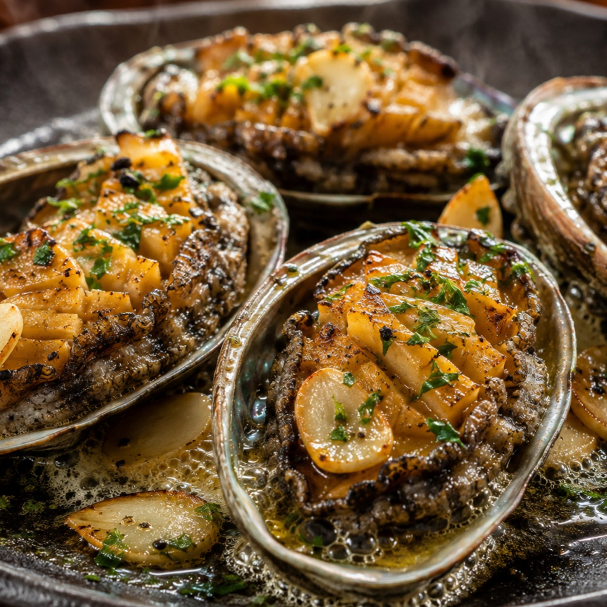
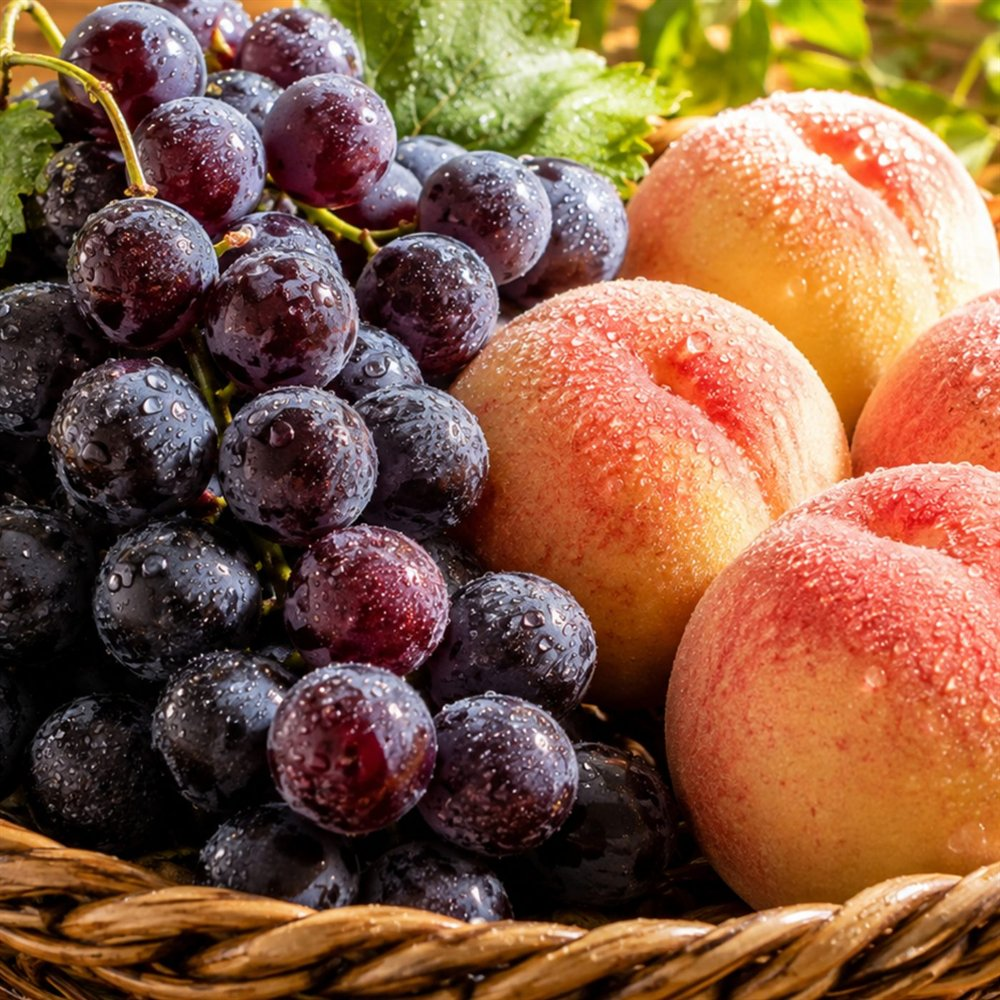
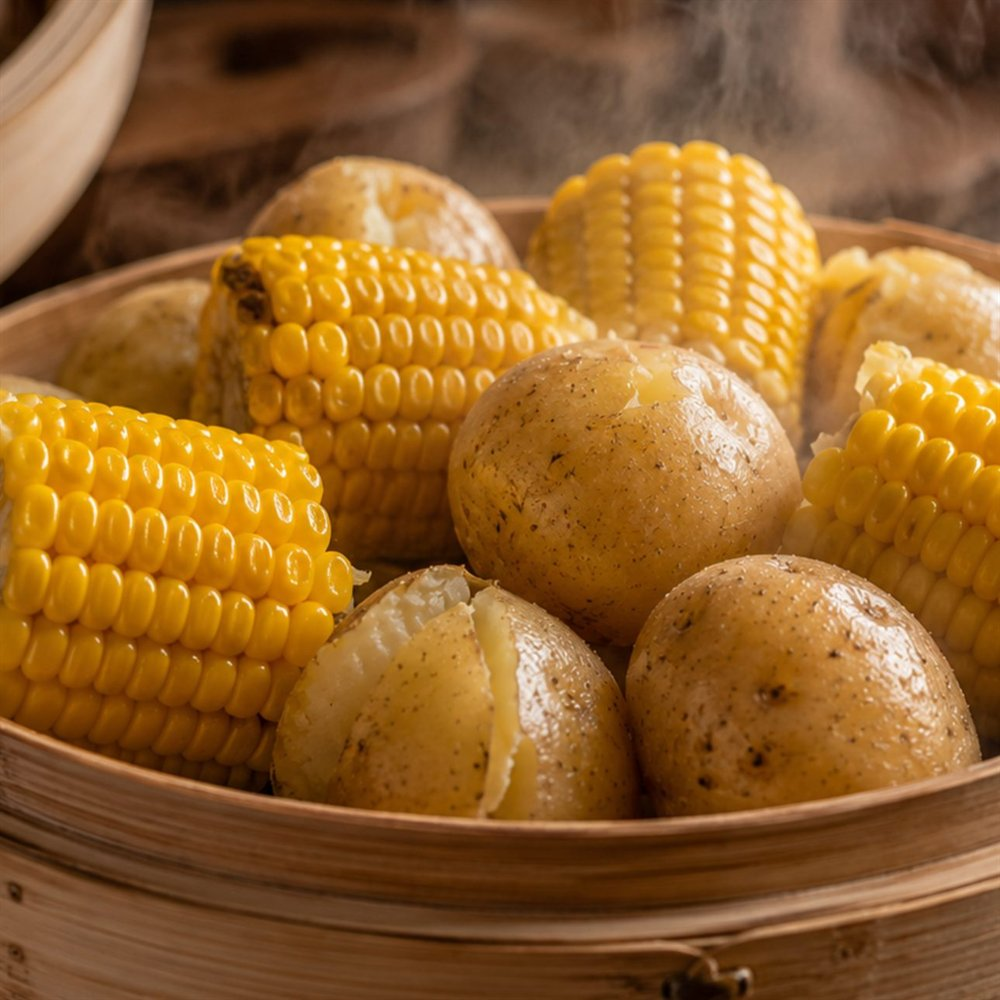
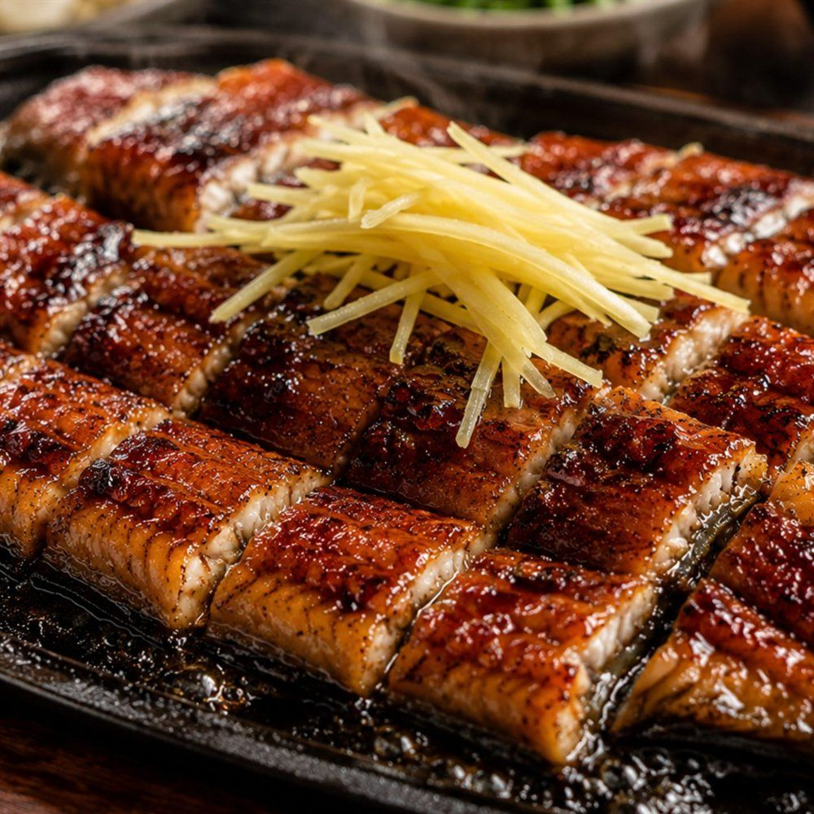

연일 이어지는 폭염과 열대야로 체내 수분과 미네랄이 고갈되는 8월은 만성 피로와 면역력 저하, 소화 기능 둔화가 한꺼번에 찾아오기 쉬운 시기입니다.
한의학과 영양학에서는 계절이 바뀌는 환절기 직전의 늦여름 식탁이야말로 1년 건강의 기초 체력을 다지는 결정적인 골든타임이라고 강조합니다. 자연이 뜨거운 태양 아래에서 가장 진한 영양을 축적해 낸 8월 5대 제철 식재료(전복, 장어, 복숭아, 포도, 옥수수·감자)의 과학적 효능과 똑똑한 섭취법을 상세히 정리해 드립니다.
1. 바다의 산삼: 전복과 장어 (타우린 & 아르기닌)
8월은 산란기를 앞두고 살이 가장 통통하게 오르고 아미노산 함량이 절정에 달하는 해산물 보양의 최고 적기입니다.
전복은 '바다의 황제'라 불릴 만큼 타우린(Taurine)과 아르기닌(Arginine)이 압도적으로 농축되어 있습니다. 타우린은 간세포의 담즙 분비를 촉진하여 간 해독을 돕고, 젖산의 축적을 억제하여 여름철 무기력증을 빠르게 해소합니다. 또한 전복 내장(게우)에는 바다 해조류의 클로로필과 푸코잔틴 성분이 응축되어 있어 면역 체계를 강력하게 지지합니다.
민물장어와 갯장어는 고단백 불포화지방산과 함께 비타민 A가 소고기의 200배 이상 함유되어 있어, 여름철 냉방병으로 거칠어진 호흡기 점막을 보호하고 눈의 피로를 덜어주는 데 탁월합니다.

2. 천연 피로회복제: 복숭아와 포도 (유기산 & 항산화)
땀으로 칼륨과 전해질이 다량 방출되는 8월에는 과일 속 천연 과즙이 링거 수액과 같은 즉각적인 수분 공급원이 되어 줍니다.
복숭아는 수분 함량이 90%에 달하며, 아스파라긴산(Aspartic acid)과 구연산, 사과산 등 천연 유기산이 풍부합니다. 이 유기산들은 체내 에너지 대사인 TCA 회로를 활성화하여 만성 피로 물질을 신속하게 분해합니다. 특히 껍질에 풍부한 펙틴은 장내 유익균의 먹이가 되어 여름철 잦은 배탈을 다스립니다.
포도는 포도당과 과당이 흡수되기 쉬운 형태로 존재하여 뇌와 근육에 즉각적인 에너지를 공급합니다. 포도 껍질과 씨에 응축된 레스베라트롤(Resveratrol)과 안토시아닌은 강력한 혈관 청소부 역할을 하여 심혈관 질환을 예방하고 자외선으로 손상된 피부 세포를 재생합니다.

3. 밭에서 나는 보약: 찰옥수수와 감자 (식이섬유 & 비타민C)
강렬한 햇빛을 머금고 자란 8월의 구황작물은 정제 탄수화물과는 비교할 수 없는 천연 복합 탄수화물과 비타민의 보고입니다.
괴산·홍천 찰옥수수는 비타민 B1, B2와 판토텐산이 풍부하여 신경계를 안정시키고 무기력감을 완화합니다. 옥수수 알맹이의 씨눈에는 불포화지방산인 리놀레산이 들어있어 혈중 콜레스테롤을 낮추며, 풍부한 불용성 식이섬유가 장 연동 운동을 활성화합니다.
하지 감자는 '땅속의 사과'라 불릴 만큼 비타민 C가 풍부(사과의 3배)합니다. 특히 감자의 비타민 C는 전분 입자에 단단히 둘러싸여 있어 열을 가해 찌거나 삶아도 70% 이상 파괴되지 않고 보존되는 놀라운 특징이 있습니다. 또한 풍부한 칼륨이 여름철 짠 음식 섭취로 인한 나트륨과 붓기를 배출해 줍니다.

4. 8월 제철 보약 식재료 영양 비교표
8월 대표 식재료 5가지의 핵심 성분과 건강 효능, 가장 영양 손실이 적은 추천 조리법입니다.
| 식재료 | 핵심 영양소 | 대표 효능 | 추천 조리법 |
|---|---|---|---|
| 전복 (완도산) | 타우린 · 아르기닌 | 간 해독 & 피로 해소 | 내장째 끓인 전복죽, 버터구이 |
| 장어 (민물/바다) | 뮤신 · 비타민 A/E | 점막 보호 & 면역 증진 | 생강채 곁들인 장어 소금구이 |
| 복숭아 (백도/황도) | 아스파라긴산 · 펙틴 | 전해질 보충 & 장 건강 | 세척 후 껍질째 생과 섭취 |
| 포도 (캠벨/거봉) | 레스베라트롤 · 철분 | 혈관 탄력 & 빈혈 예방 | 껍질째 갈아 만든 생과일주스 |
| 감자 · 옥수수 | 비타민 C · 칼륨 · 섬유질 | 부종 완화 & 대사 활성 | 껍질째 찌기, 감자옹심이국 |

5. 신선한 식재료 고르는 법 & 보관 꿀팁
제철 식재료의 영양가를 100% 온전히 누리기 위한 스마트 장보기 및 신선 보관 원칙입니다.
살을 살짝 건드렸을 때 즉각 오므라드는 것이 신선하며, 내장은 당일 조리하거나 급랭합니다.
냉장고에 바로 넣으면 당도가 떨어지므로 상온 보관 후 먹기 1시간 전에 냉장 보관합니다.
알 표면에 흰 가루(천연 과분)가 고르게 묻고 송이 끝부분 알이 달콤한 것을 선택합니다.
수확 후 시간이 지나면 당분이 전분으로 변하므로 구매 당일 바로 쪄서 냉동 보관합니다.
6. 자주 묻는 질문 (FAQ)
마치며: 제철의 생명력으로 채우는 늦여름 에너지
가장 뜨거운 태양 아래 자란 8월의 제철 음식은 지친 우리 몸을 보듬어 주는 자연의 가장 완전한 선물입니다.
오늘 저녁, 가족과 함께 영양 가득한 전복죽이나 향긋한 제철 과일 한 접시로 늦여름 더위를 건강하게 이겨내 보세요!